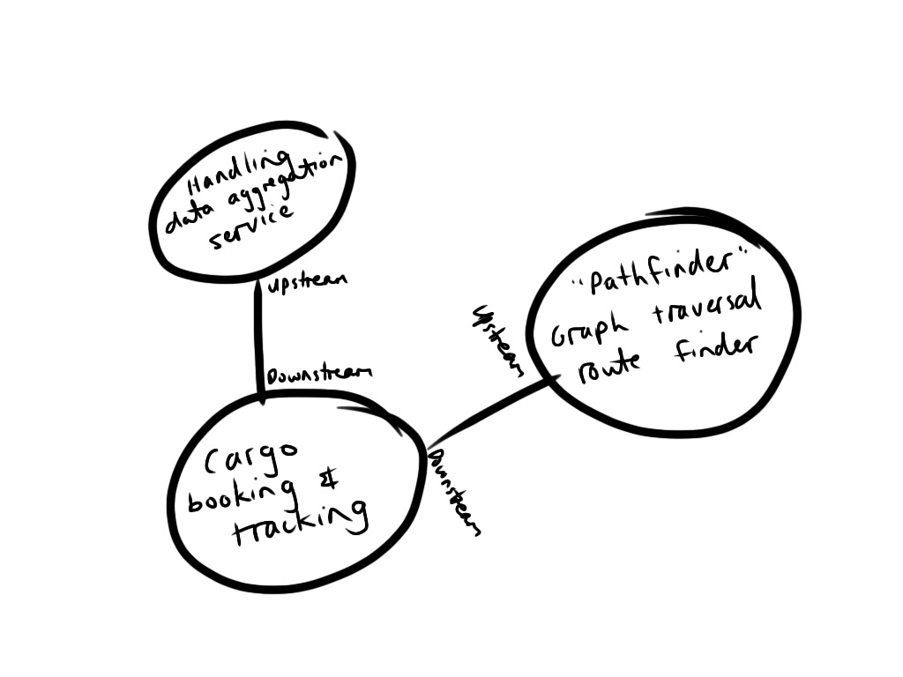
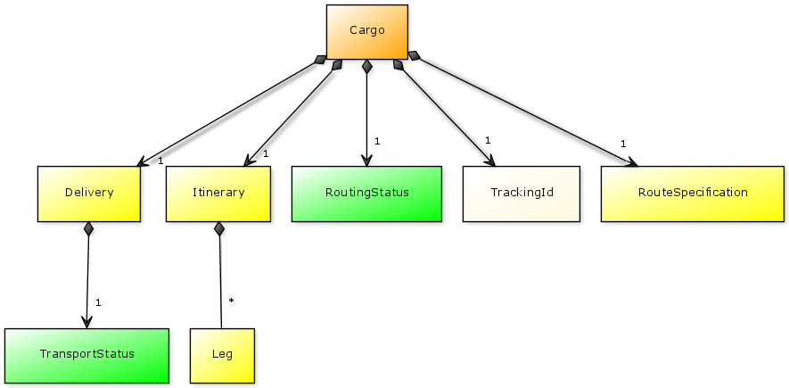
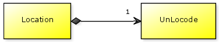
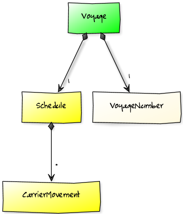
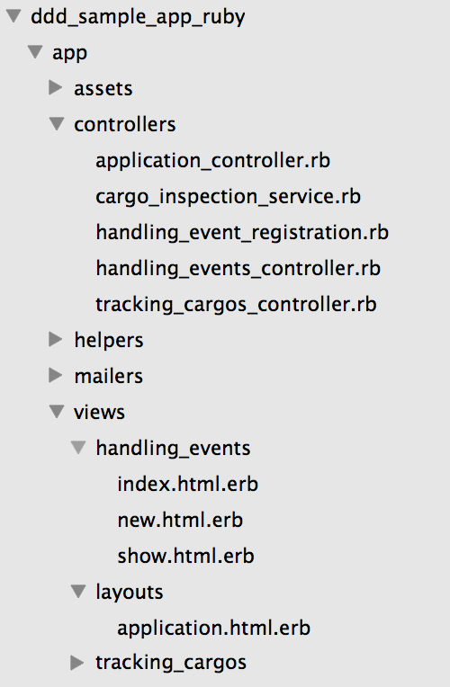
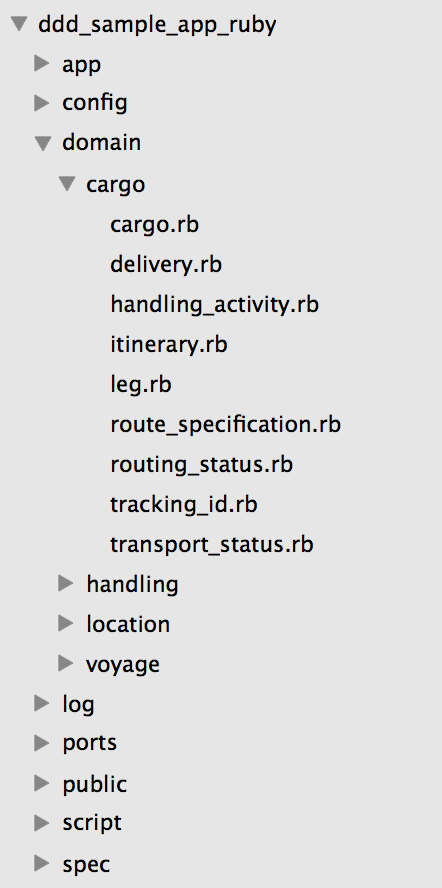
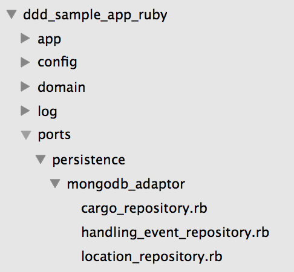

Domain-Driven Design with Ruby
“Learning never exhausts the mind.” - Leonardo da Vinci
The Virgin and Child with St Anne and St John the Baptist - Leonardo Da Vinci
Interesting Questions
-
How does the choice of Ruby affect the implementation of the DDD building block patterns?
-
How well does an opinionated MVC web framework like Rails support doing DDD?
-
What are implications of choosing a document store like MongoDB for aggregate design and eventual consistency?
DDD Sample App
Image courtesy of FreeFoto.com
DDD Sample Application
-
2009 - Java 1.1.0 release
-
2010/2011 - DDDSample.NET - C# Port
-
2013 - Ruby port - based on Java & C#
Why Ruby?
Why not Ruby?
-
Growing interest in design patterns and DDD in Ruby community
-
Rich OSS ecosystem and vibrant agile development community
-
Many talented modelers and designers, with a need to move beyond simple MVC and ActiveRecord in Rails
Why Me?
-
Background in DDD, not Ruby
-
Certified DDD instructor for Domain Language
-
Goal: master Ruby in 2013
-
Rails development for a Denver non-profit
-
Author of Guard::AsciiDoc Gem

Demo
Modeled as 4 Aggregates
-
Cargo
-
HandlingEvent
-
Location
-
Voyage



Goal: Idiomatic Ruby port
Domain Model - Plain Ruby Objects
class Delivery
attr_reader :transport_status
attr_reader :last_known_location
attr_reader :is_misdirected
attr_reader :eta
attr_reader :is_unloaded_at_destination
attr_reader :routing_status
attr_reader :calculated_at
attr_reader :last_handling_event
attr_reader :next_expected_activity
class InitializationError < RuntimeError; end
def initialize(route_specification, itinerary, last_handling_event)
raise InitializationError unless route_specification
@last_handling_event = last_handling_event
@routing_status = calculate_routing_status(itinerary, route_specification)
@transport_status = calculate_transport_status(last_handling_event)
@last_known_location = calculate_last_known_location(last_handling_event)
@is_misdirected = calculate_misdirection_status(last_handling_event, itinerary)
@is_unloaded_at_destination = calculate_unloaded_at_destination(last_handling_event, route_specification)
@eta = calculate_eta(itinerary)
@next_expected_activity = calculate_next_expected_activity(last_handling_event, route_specification, itinerary)
@calculated_at = DateTime.nowRSpec-based Unit Tests
ddd_sample_app_ruby$ rspec spec/domain/delivery_spec.rb
Delivery
Cargo has no next expected activity when not on track
Cargo transport status is claimed when the last recorded handling event is a claim
Cargo is misdirected when the last recorded handling event does not match the itinerary
Cargo has next expected activity of load at origin when when the last recorded handling event is a receive
...
Finished in 0.14528 seconds
29 examples, 0 failuresValue Objects
Deep Freeze!
Using Ice Nine. As currently implemented in Leg:
def initialize(voyage, load_location, load_date, unload_location, unload_date)
@voyage = voyage
@load_location = load_location
@unload_location = unload_location
@load_date = load_date
@unload_date = unload_date
IceNine.deep_freeze(self)
endEquality
As currently implemented in Leg:
def ==(other)
self.voyage == voyage &&
self.load_location == load_location &&
self.unload_location == unload_location &&
self.load_date == load_date &&
self.unload_date == unload_date
endRails-Based Stack

Rails-Based Stack
-
DDD favors Repository pattern
-
Rails implements ActiveRecord pattern
-
Repository vs ActiveRecord - Fight!



MongoDB - Aggregate-Oriented Datastore

Cargo Document in MongoDB
{
"_id":ObjectId("51b6a44773fe874a9a00002c"),
"tracking_id":"cargo_1234",
"origin_code":"CNHKG",
"origin_name":"Hongkong",
"destination_code":"USDAL",
"destination_name":"Dallas",
"arrival_deadline": ISODate("2013-07-01T00:00:00 Z"),
"last_handling_event_id":"7d690ace-d24d-11e2-9753-080027129698",
"leg_documents":[
{
"_id":ObjectId("51b6a44773fe874a9a00002d"),
"voyage":"Voyage ABC",
"load_location_code":"CNHKG",
"load_location_name":"Hongkong",
"unload_location_code":"USLGB",
"unload_location_name":"Long Beach",
"load_date": ISODate("2013-06-14T00:00:00 Z"),
"unload_date": ISODate("2013-06-19T00:00:00 Z")
},
{
"_id":ObjectId("51b6a44773fe874a9a00002e"),
"voyage":"Voyage DEF",
"load_location_code":"USLGB",
"load_location_name":"Long Beach",
"unload_location_code":"USDAL",
"unload_location_name":"Dallas",
"load_date": ISODate("2013-06-21T00:00:00 Z"),
"unload_date": ISODate("2013-06-24T00:00:00 Z")
}
]
}Cargo Inspection Service
class CargoInspectionService
def cargo_was_handled(tracking_id, last_handling_event)
cargo_repository = CargoRepository.new
cargo = cargo_repository.find_by_tracking_id(tracking_id)
cargo.derive_delivery_progress(last_handling_event)
cargo_repository.store(cargo)
end
endMongoid - Remove all references to ActiveRecord from Rails

Cargo Repository
def find_by_tracking_id(tracking_id)
cargo_doc = CargoDocument.find_by(tracking_id: tracking_id.id)
CargoDocumentAdaptor.new.transform_to_cargo(cargo_doc)
endEventual Consistency Between Aggregates

-
Actor-based concurrent object framework for Ruby
Registering Handling Events
class HandlingEventRegistration
include Wisper::Publisher
def handle(register_handling_event)
# code to process register_handling_event command goes here...
endPublish that Cargo Was Handled
# inside handle(register_handling_event)...
handling_event = HandlingEvent.new(event_type, location, registration_date, completion_date, tracking_id, HandlingEvent.new_id)
handling_event_repository = HandlingEventRepository.new
handling_event_repository.store(handling_event)
publish(:cargo_was_handled, tracking_id, handling_event)Cargo Inspection Service
class CargoInspectionService
def cargo_was_handled(tracking_id, last_handling_event)
cargo_repository = CargoRepository.new
cargo = cargo_repository.find_by_tracking_id(tracking_id)
cargo.derive_delivery_progress(last_handling_event)
cargo_repository.store(cargo)
end
endAsync Aggregate Updates
# Subscribe cargo inspection service to handling event registrations
Wisper::GlobalListeners.add_listener(CargoInspectionService.new, :async => true)Extending the Model
Cargo Inspection Service
class CargoInspectionService
def cargo_was_handled(tracking_id, last_handling_event)
cargo_repository = CargoRepository.new
cargo = cargo_repository.find_by_tracking_id(tracking_id)
cargo.derive_delivery_progress(last_handling_event)
cargo_repository.store(cargo)
end
endCargo Misdirected & Unloaded at Destination
Make it a Publisher
class CargoInspectionService
include Wisper::Publisherclass CargoInspectionService
include Wisper::Publisher
def cargo_was_handled(tracking_id, last_handling_event)
cargo_repository = CargoRepository.new
cargo = cargo_repository.find_by_tracking_id(tracking_id)
cargo.derive_delivery_progress(last_handling_event)
# Publish when cargo misdirected or unloaded at destination
publish(:cargo_is_misdirected, tracking_id) if cargo.delivery.is_misdirected
publish(:cargo_is_unloaded_at_destination, tracking_id) if cargo.delivery.is_unloaded_at_destination
cargo_repository.store(cargo)
end
endNew Methods
class CargoInspectionService
include Wisper::Publisher
def cargo_was_handled(tracking_id, last_handling_event)
cargo_repository = CargoRepository.new
cargo = cargo_repository.find_by_tracking_id(tracking_id)
cargo.derive_delivery_progress(last_handling_event)
publish(:cargo_is_misdirected, tracking_id) if cargo.delivery.is_misdirected
publish(:cargo_is_unloaded_at_destination, tracking_id) if cargo.delivery.is_unloaded_at_destination
cargo_repository.store(cargo)
end
# New methods...
def cargo_is_misdirected(tracking_id)
puts "Cargo is misdirected - need to reroute it! ", tracking_id.inspect
end
def is_unloaded_at_destination(tracking_id)
puts "Cargo has arrived at the destination - notify the customer.", tracking_id.inspect
end
endSome Lessons Learned
DDD in a dynamic language is a nice fit, more exploration to be done with value objects & repositories
MongoDB provides very natural aggregate modeling & persistence
Actor-based model used by Celluloid provides an elegant asynchronous aggregate update mechanism
Learning in public
-
https://github.com/paulrayner/ddd_sample_app_ruby - see README for resources
Thanks for Expertise
-
DDD Sample App - Eric Evans, Peter Backlund, Szymon Pobiega, Patrik Fredriksson
-
Ruby & Rails - Dan Sharp
Thank You